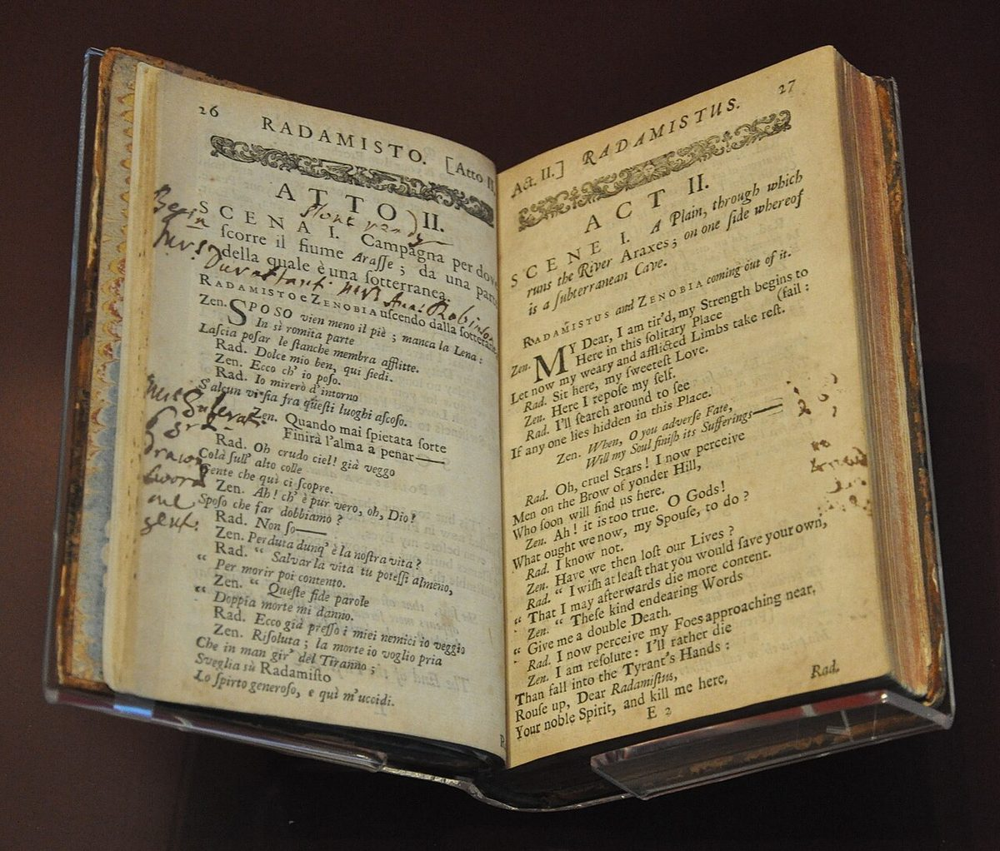
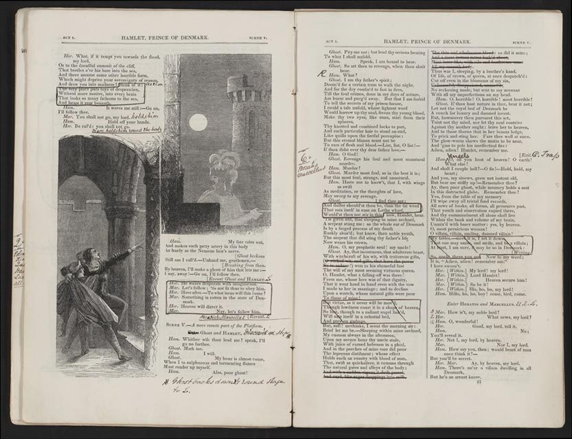
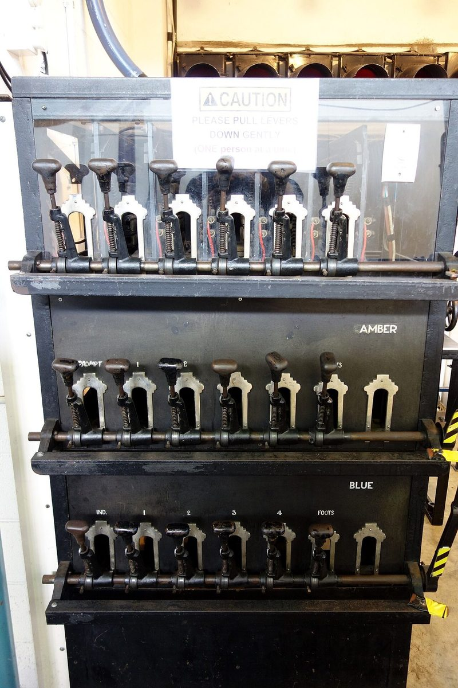
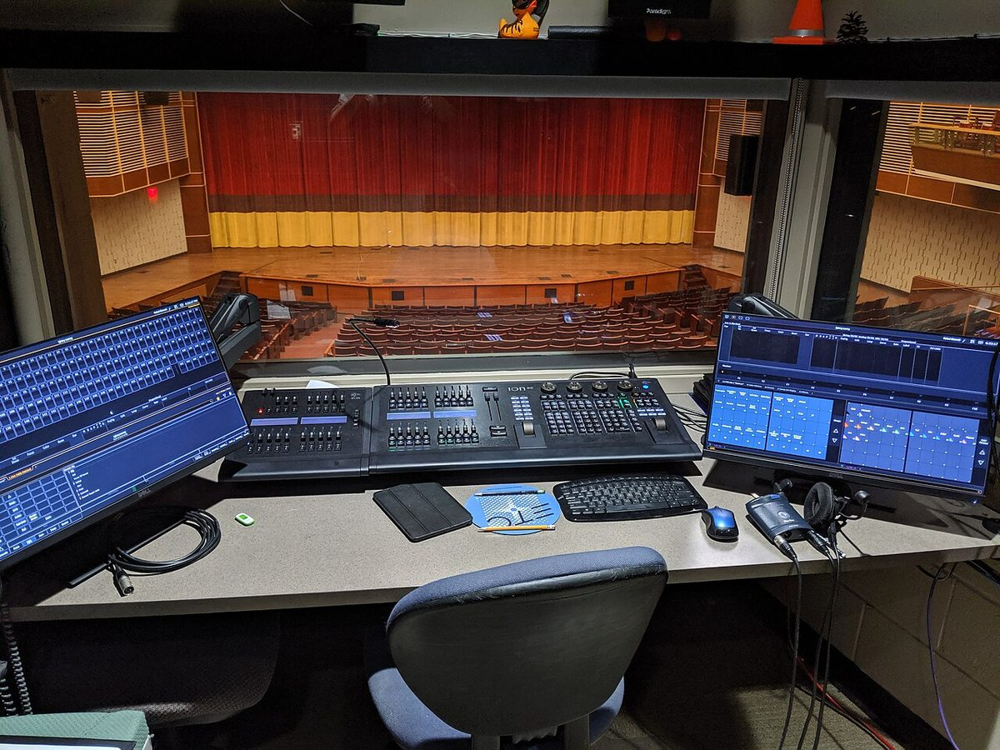
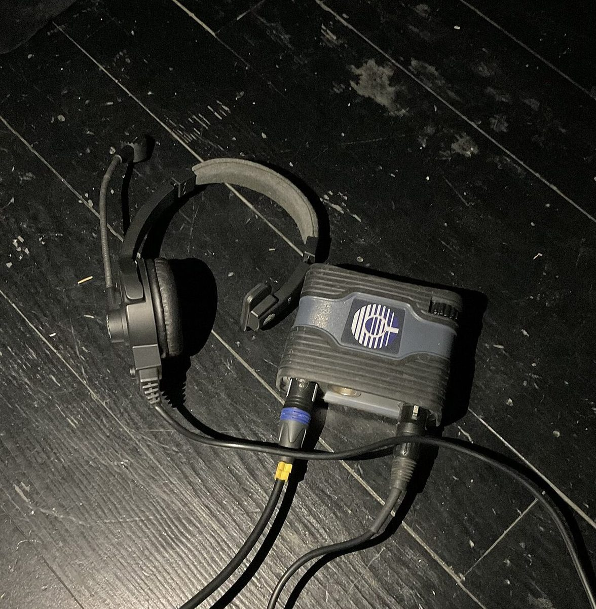

Give it an identity
Use a department and stable ID, such as SND 1 (sound), LX 1 (lighting), SCN 1 (scenery), or CST 1 (costume). Agree on abbreviations with your teacher. Keep IDs when the order changes; an inserted cue could be SND 1A.
School musical production • Grades 6–12 • 35–50 minutes
One show. Many moving parts. A cue sheet tells the crew when to act, what to do, and who does it. Turn a moment in your musical into a clear plan, then print your sheet for turn-in.
Build your cue sheetA cue is a planned action: start music, fade a light, move a bench, or begin a costume change. List cues in show order. A cue sheet summarizes the work; mark the same cue IDs beside their triggers in your script or score.
Use a department and stable ID, such as SND 1 (sound), LX 1 (lighting), SCN 1 (scenery), or CST 1 (costume). Agree on abbreviations with your teacher. Keep IDs when the order changes; an inserted cue could be SND 1A.
“During the song” is too vague. Use an exact spoken word, visible action, or score bar and beat: on the word “home” or bar 32, beat 1. A page number helps find a cue; it does not tell the crew when to act.
“Music” is too vague. Write Play track 03, ‘Market entrance’; fade in over 2 seconds at the rehearsed level. Name the operator. For a shift, record the object, route, destination, and crew. Stage left/right are the performer’s left/right when facing the audience.
Standby gives the crew time to prepare and acknowledge readiness. GO tells them to execute. The caller says the department and cue number, ending with GO. Agree during rehearsal how much warning each task needs; a costume change may need much more preparation than pressing play.
Some backstage actions are self-cued by an agreed exit or musical moment. Write “self-cued” in the standby field and record the exact trigger. For a quick change, name the performer, change location, dresser, new costume, and next entrance deadline. Plan scene shifts and quick changes with your teacher; confirm the route is clear before a move.
A: “Start the music near the end of the scene.”
B: “On the final word ‘tomorrow,’ Sound 2 GO; play track 04.”
B gives an observable trigger and a defined action. For your show, agree whether GO lands on that word or immediately after it. Confirm timing against the actor and conductor in rehearsal.
This is the same Act I opening that the Stage Plotting worked example turns into a ground plan. On the left is the stage manager’s marked script; below it, the cue sheet those marks become. Script text is W. S. Gilbert’s (public domain, Project Gutenberg); bracketed notes, timings and channel numbers are this production’s choices.
[Places called. House manager gives clearance.]
[Conductor reaches the podium.]
[Overture plays. Standby 8 bars before the end.]
[Cutoff of the overture’s final chord.]
(Scene.—A rocky seashore on the coast of Cornwall. … As the curtain rises groups of pirates are discovered …)
OPENING CHORUS
(FREDERIC rises and comes forward with PIRATE KING, who enters)
[Ours enters through the arch, R.C.]
KING: Yes, Frederic, from to-day you rank as a full-blown member of our band.
ALL: Hurrah!
[… dialogue continues …]
SAMUEL: An error? What error?
(RUTH rises and comes forward)
RUTH: Nay, dear master, my mind has long been gnawed by the cankering tooth of mystery.
Better have it out at once.
SONG — RUTH
When Frederic was a little lad he proved so brave and daring, …
| Cue | Department | Standby | GO trigger | Action | Owner |
|---|---|---|---|---|---|
| LX 1 | Lighting | House manager gives clearance | Conductor reaches the podium | House lights out over 5 s; pit lights stay on. | Lighting op |
| FLY 1 | Fly rail | 8 bars before the end of the overture | Cutoff of the final chord (with LX 2) | Main curtain out on a 4-count to its high mark. | Fly crew |
| LX 2 | Lighting | With FLY 1 | Same GO as FLY 1 | Rocky-shore daylight look over 4 s. | Lighting op |
| SND 1 | Sound | During the opening chorus | Pirate King steps through the arch | Unmute ch. 7 (Pirate King) at the rehearsed level. | Sound op |
| SND 2 | Sound | Samuel: “What error?” | Ruth rises | Unmute ch. 4 (Ruth). | Sound op |
| LX 3 | Lighting | Ruth: “…tooth of mystery.” | On the word “once” | Song look: warm downstage-center special; rest of stage to 50% over 3 s. | Lighting op |
Try it: open the builder below and enter these six cues, then add a cue for the end of Ruth’s song.
Stage managers have marked scripts for three centuries; the equipment that answers the GO keeps changing. Click a photo to enlarge it.





Further reading: Theatrecrafts: the prompt book and calling cues and communications. Examples here are invented for practice; use your production’s script and agreed crew procedures.
Fill in your own cues below. Blank fields stay as writing space on paper.
Your draft saves on this browser and device. Download a backup to keep it or move computers.
Write cues in show order. Use ↑ and ↓ to move a cue. IDs are yours to assign and do not change when moved. “Other” lets you name any department.
No cues yet. Add a cue or append the practice example.
Print uses landscape paper and includes only your worksheet. In the print dialog, choose your printer or “Save as PDF.” Turn off browser headers and footers for a cleaner sheet.